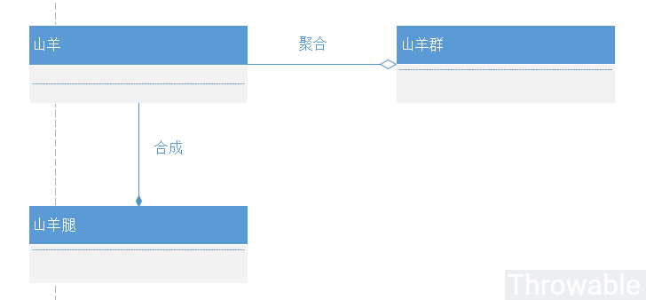

设计模式概念和七大原则
本文最后更新于：2024年2月21日 中午
什么是设计模式
在GoF(Gang of Four)的书籍《Design Patterns - Elements of Reusable Object-Oriented Software(设计模式-可复用面向对象软件的基础)》中是这样定义设计模式的：Christopher Alexander说过：“每一个模式描述了一个在我们周围不断重复发生的问题以及该问题的解决方案的核心。这样，你就能一次又一次地使用该方案而不必做重复劳动” [AIS+77，第10页]。尽管Alexander所指的是城市和建筑模式，但他的思想也同样适用于面向对象设计模式，只是在面向对象的解决方案里， 我们用对象和接口代替了墙壁和门窗。两类模式的核心都在于提供了相关问题的解决方案。一般而言，设计模式有四个基本要素：
- 模式名称(pattern name)：一个助记名，它用一两个词来描述模式的问题、解决方案和效果。
- 问题(problem)：描述了应该在何时使用模式。
- 解决方案(solution)：描述了设计的组成成分，它们之间的相关关系以及各自的职责和协作方案。
- 效果(consequences)：描述了模式应用的效果以及使用模式应该权衡的问题。
设计模式的创始人很明确地指出了设计模式的基本要素，但是由于现实中浮躁、偏向过度设计等因素的干扰，开发者很多时候会重点关注第1和第3点要素(过度关注设计模式和设计模式的实现)，忽略第2和第4点要素(忽视使用设计模式的场景和目标)，导致设计出来的编码逻辑可能过于复杂或者达不到预期的效果。
总的来说，设计模式(Design Pattern)是一套被反复使用、多数人知晓的、经过分类编目的、代码设计经验的总结。也就是本来并不存在所谓设计模式，用的人多了，也便成了设计模式。
设计模式的七大原则
面向对象的设计模式有七大基本原则：
- 开闭原则（Open Closed Principle，OCP）
- 单一职责原则（Single Responsibility Principle, SRP）
- 里氏代换原则（Liskov Substitution Principle，LSP）
- 依赖倒转原则（Dependency Inversion Principle，DIP）
- 接口隔离原则（Interface Segregation Principle，ISP）
- 合成/聚合复用原则（Composite/Aggregate Reuse Principle，CARP）
- 最少知识原则（Least Knowledge Principle，LKP）或者迪米特法则（Law of Demeter，LOD）
| 标记 | 设计模式原则名称 | 简单定义 |
|---|---|---|
| OCP | 开闭原则 | 对扩展开放，对修改关闭 |
| SRP | 单一职责原则 | 一个类只负责一个功能领域中的相应职责 |
| LSP | 里氏代换原则 | 所有引用基类的地方必须能透明地使用其子类的对象 |
| DIP | 依赖倒转原则 | 依赖于抽象，不能依赖于具体实现 |
| ISP | 接口隔离原则 | 类之间的依赖关系应该建立在最小的接口上 |
| CARP | 合成/聚合复用原则 | 尽量使用合成/聚合，而不是通过继承达到复用的目的 |
| LOD | 迪米特法则 | 一个软件实体应当尽可能少的与其他实体发生相互作用 |
其中，单一职责原则、开闭原则、迪米特法则、里氏代换原则和接口隔离原则就是我们平常熟知的SOLID。
这个表格看起来有点抽象，下面逐条分析。
开闭原则
开闭原则（Open Closed Principle，OCP）的定义是：一个软件实体如类、模块和函数应该对扩展开放，对修改关闭。模块应尽量在不修改原（是”原”，指原来的代码）代码的情况下进行扩展。
开闭原则的意义
在软件的生命周期内，因为变化、升级和维护等原因需要对软件原有代码进行修改时，可能会给旧代码中引入错误，也可能会使我们不得不对整个功能进行重构，并且需要原有代码经过重新测试。当软件需要变化时，尽量通过扩展软件实体的行为来实现变化，而不是通过修改已有的代码来实现变化。
如何实现对扩展开放，对修改关闭
要实现对扩展开放，对修改关闭，即遵循开闭原则，需要对系统进行抽象化设计，抽象可以基于抽象类或者接口。一般来说需要做到几点：
- 通过接口或者抽象类约束扩展，对扩展进行边界限定，不允许出现在接口或抽象类中不存在的public方法，也就是扩展必须添加具体实现而不是改变具体的方法。
- 参数类型、引用对象尽量使用接口或者抽象类，而不是实现类，这样就能尽量保证抽象层是稳定的。
- 一般抽象模块设计完成(例如接口的方法已经敲定)，不允许修改接口或者抽象方法的定义。
下面通过一个例子遵循开闭原则进行设计，场景是这样：某系统的后台需要监测业务数据展示图表，如柱状图、折线图等，在未来需要支持图表的着色操作。在开始设计的时候，代码可能是这样的：
public class BarChart {
public void draw(){
System.out.println("Draw bar chart...");
}
}
public class LineChart {
public void draw(){
System.out.println("Draw line chart...");
}
}
public class App {
public void drawChart(String type){
if (type.equalsIgnoreCase("line")){
new LineChart().draw();
}else if (type.equalsIgnoreCase("bar")){
new BarChart().draw();
}
}
}
这样做在初期是能满足业务需要的，开发效率也十分高，但是当后面需要新增一个饼状图的时候，既要添加一个饼状图的类，原来的客户端App类的drawChart()方法也要新增一个else if分支，这样做就是修改了原有客户端类库的方法，是十分不合理的。如果这个时候，在图中加入一个颜色属性，复杂性也大大提高。基于此，需要引入一个抽象Chart类AbstractChart，App类在画图的时候总是把相关的操作委托到具体的AbstractChart的派生类实例，这样的话App类的代码就不用修改：
public abstract class AbstractChart {
public abstract void draw();
}
public class BarChart extends AbstractChart{
@Override
public void draw() {
System.out.println("Draw bar chart...");
}
}
public class LineChart extends AbstractChart {
@Override
public void draw() {
System.out.println("Draw line chart...");
}
}
public class App {
public void drawChart(AbstractChart chart){
chart.draw();
}
}
如果新加一种图，只需要新增一个AbstractChart的子类即可。客户端类App不需要改变原来的逻辑。修改后的设计符合开闭原则，因为整个系统在扩展时原有的代码没有做任何修改。
单一职责原则
单一职责原则（Single Responsibility Principle, SRP）的定义是：指一个类或者模块应该有且只有一个改变的原因。如果一个类承担的职责过多，就等于把这些职责耦合在一起了。一个职责的变化可能会削弱或者抑制这个类完成其他职责的能力。这种耦合会导致脆弱的设计，当发生变化时，设计会遭受到意想不到的破坏。而如果想要避免这种现象的发生，就要尽可能的遵守单一职责原则。此原则的核心就是解耦和增强内聚性。
单一职责原则的意义
单一职责原则告诉我们：一个类不能做太多的东西。在软件系统中，一个类(一个模块、或者一个方法)承担的职责越多，那么其被复用的可能性就会越低。一个很典型的例子就是万能类。其实可以说一句大实话：任何一个常规的MVC项目，在极端的情况下，可以用一个类(甚至一个方法)完成所有的功能。但是这样做就会严重耦合，甚至牵一发动全身。一个类承(一个模块、或者一个方法)担的职责过多，就相当于将这些职责耦合在一起，当其中一个职责变化时，可能会影响其他职责的运作，因此要将这些职责进行分离，将不同的职责封装在不同的类中，即将不同的变化原因封装在不同的类中，如果多个职责总是同时发生改变则可将它们封装在同一类中。
不过说实话，其实有的时候很难去衡量一个类的职责，主要是很难确定职责的粒度。这一点不仅仅体现在一个类或者一个模块中，也体现在采用微服务的分布式系统中。这也就是为什么我们在实施微服务拆分的时候经常会撕逼：”这个功能不应该发在A服务中，它不做这个领域的东西，应该放在B服务中”诸如此类的争论。存在争论是合理的，不过最好不要不了了之，而应该按照领域定义好每个服务的职责(职责的粒度最好找业务和架构专家咨询)，得出相对合理的职责分配。
下面通过一个很简单的实例说明一下单一职责原则：
在一个项目系统代码编写的时候，由于历史原因和人为的不规范，导致项目没有分层，一个Service类的伪代码是这样的：
public class Service {
public UserDTO findUser(String name){
Connection connection = getConnection();
PreparedStatement preparedStatement = connection.prepareStatement("SELECT * FROM t_user WHERE name = ?");
preparedStatement.setObject(1, name);
User user = //处理结果
UserDTO dto = new UserDTO();
//entity值拷贝到dto
return dto;
}
}
这里出现一个问题，Service做了太多东西，包括数据库连接的管理，Sql的执行这些业务层不应该接触到的逻辑，更可怕的是，例如到时候如果数据库换成了Oracle，这个方法将会大改。因此，拆分出新的DataBaseUtils类用于专门管理数据库资源，Dao类用于专门执行查询和查询结果封装，改造后Service类的伪代码如下：
public class Service {
private Dao dao;
public UserDTO findUser(String name){
User user = dao.findUserByName(name);
UserDTO dto = new UserDTO();
//entity值拷贝到dto
return dto;
}
}
public class Dao{
public User findUserByName(String name){
Connection connection = DataBaseUtils.getConnnection();
PreparedStatement preparedStatement = connection.prepareStatement("SELECT * FROM t_user WHERE name = ?");
preparedStatement.setObject(1, name);
User user = //处理结果
return user;
}
}
现在，如果有查询封装的变动只需要修改Dao类，数据库相关变动只需要修改DataBaseUtils类，每个类的职责分明。这个时候，如果我们要把底层的存储结构缓成Redis或者MongoDB怎么办，这样显然要重建整个Dao类，这种情况下，需要进行接口隔离，下面分析接口隔离原则的时候再详细分析。
里氏代换原则
里氏代换原则（Liskov Substitution Principle，LSP）的定义是：所有引用基类的地方必须能透明地使用其子类的对象，也可以简单理解为任何基类可以出现的地方，子类一定可以出现。
里氏代换原则的意义
只有当衍生类可以替换掉基类，软件单位的功能不受到影响时，基类才能真正被复用，而衍生类也能够在基类的基础上增加新的行为。里氏代换原则是对”开-闭”原则的补充。实现”开-闭”原则的关键步骤就是抽象化。而基类与子类的继承关系就是抽象化的具体实现，所以里氏代换原则是对实现抽象化的具体步骤的规范。当然，如果反过来，软件单位使用的是一个子类对象的话，那么它不一定能够使用基类对象。举个很简单的例子说明这个问题：如果一个方法接收Map类型参数，那么它一定可以接收Map的子类参数例如HashMap、LinkedHashMap、ConcurrentHashMap类型的参数；但是反过来，如果另一个方法只接收HashMap类型的参数，那么它一定不能接收所有Map类型的参数，否则它可以接收LinkedHashMap、ConcurrentHashMap类型的参数。
子类为什么可以替换基类的位置
其实原因很简单，只要存在继承关系，基类的所有非私有属性或者方法，子类都可以通过继承获得(白箱复用)，反过来不成立，因为子类很有可能扩充自身的非私有属性或者方法，这个时候不能用基类获取子类新增的这些属性或者方法。
里氏代换原则是实现开闭原则的基础，它告诉我们在设计程序的时候进可能使用基类进行对象的定义和引用，在运行时再决定基类的具体子类型。
举个简单的例子，假设一种会呼吸的动物作为父类，子类猪和鸟也有自身的呼吸方式：
public abstract class Animal {
protected abstract void breathe();
}
public class Bird extends Animal {
@Override
public void breathe() {
System.out.println("Bird breathes...");
}
}
public class Pig extends Animal {
@Override
public void breathe() {
System.out.println("Pig breathes...");
}
}
public class App {
public static void main(String[] args) throws Exception {
Animal bird = new Bird();
bird.breathe();
Animal pig = new Pig();
pig.breathe();
}
}
依赖倒转原则
依赖倒转原则（Dependency Inversion Principle，DIP）的定义：程序要依赖于抽象接口，不要依赖于具体实现。简单的说就是要求对抽象进行编程，不要对实现进行编程，这样就降低了客户与实现模块间的耦合。
依赖倒转原则的意义
依赖倒转原则要求我们在程序代码中传递参数时或在关联关系中，尽量引用层次高的抽象层类，即使用接口和抽象类进行变量类型声明、参数类型声明、方法返回类型声明，以及数据类型的转换等，而不要用具体类来做这些事情。为了确保该原则的应用，一个具体类应当只实现接口或抽象类中声明过的方法，而不要给出多余的方法，否则将无法调用到在子类中增加的新方法。在引入抽象层后，系统将具有很好的灵活性，在程序中尽量使用抽象层进行编程，而将具体类写在配置文件中，这样一来，如果系统行为发生变化，只需要对抽象层进行扩展，并修改配置文件，而无须修改原有系统的源代码，在不修改的情况下来扩展系统的功能，满足开闭原则的要求。
依赖倒转原则的注意事项
- 高层模块不应该依赖低层模块，高层模块和低层模块都应该依赖于抽象。
- 抽象不应该依赖于具体，具体应该依赖于抽象。
在实现依赖倒转原则时，我们需要针对抽象层编程，而将具体类的对象通过依赖注入(DependencyInjection, DI)的方式注入到其他对象中，依赖注入是指当一个对象要与其他对象发生依赖关系时，通过抽象来注入所依赖的对象。常用的注入方式有三种，分别是：构造注入，设值注入（Setter注入）和接口注入。Spring的IOC是此实现的典范。
从Java角度看待依赖倒转原则的本质就是：面向接口(抽象)编程。
- 每个具体的类都应该有其接口或者基类，或者两者都具备。
- 类中的引用对象应该是接口或者基类。
- 任何具体类都不应该派生出子类。
- 尽量不要覆写基类中的方法。
- 结合里氏代换原则使用。
遵循依赖倒转原则的一个例子，场景是司机开车：
public interface Driver {
void drive();
void setCar(Car car);
}
public interface Car {
void run();
}
public class DefaultDriver implements Driver {
private Car car;
@Override
public void drive() {
car.run();
}
@Override
public void setCar(Car car) {
this.car = car;
}
}
public class Bmw implements Car {
@Override
public void run() {
System.out.println("Bmw runs...");
}
}
public class Benz implements Car {
@Override
public void run() {
System.out.println("Benz runs...");
}
}
public class App {
public static void main(String[] args) throws Exception {
Driver driver = new DefaultDriver();
Car car = new Benz();
driver.setCar(car);
driver.drive();
car = new Bmw();
driver.setCar(car);
driver.drive();
}
}
这样实现了一个司机可以开各种类型的车，如果还有其他类型的车，只需要新加一个Car的实现即可。
接口隔离原则
接口隔离原则（Interface Segregation Principle，ISP）的定义是客户端不应该依赖它不需要的接口，类间的依赖关系应该建立在最小的接口上。简单来说就是建立单一的接口，不要建立臃肿庞大的接口。也就是接口尽量细化，同时接口中的方法尽量少。
如何看待接口隔离原则和单一职责原则
单一职责原则注重的是类和接口的职责单一，这里职责是从业务逻辑上划分的，但是在接口隔离原则要求当一个接口太大时，我们需要将它分割成一些更细小的接口，使用该接口的客户端仅需知道与之相关的方法即可。也就是说，我们在设计接口的时候有可能满足单一职责原则但是不满足接口隔离原则。
接口隔离原则的规范
- 使用接口隔离原则前首先需要满足单一职责原则。
- 接口需要高内聚，也就是提高接口、类、模块的处理能力，少对外发布
public的方法。 - 定制服务，只提供访问者需要的方法。
- 接口设计是有限度的，接口的设计粒度越小，系统越灵活，但是值得注意不能过小，否则变成”字节码编程”。
如果有用过spring-data-redis的人就知道，RedisTemplate中持有一些列的基类，分别是ValueOperations(处理K-V)、ListOperations(处理Hash)、SetOperations(处理集合)等等。
public interface ValueOperations<K, V> {
void set(K key, V value);
void set(K key, V value, long timeout, TimeUnit unit);
//....
}
合成/聚合复用原则
合成/聚合复用原则（Composite/Aggregate Reuse Principle，CARP）一般也叫合成复用原则(Composite Reuse Principle, CRP)，定义是：尽量使用合成/聚合，而不是通过继承达到复用的目的。
合成/聚合复用原则就是在一个新的对象里面使用一些已有的对象，使之成为新对象的一部分；新的对象通过向内部持有的这些对象的委派达到复用已有功能的目的，而不是通过继承来获得已有的功能。
聚合(Aggregate)的概念
聚合表示一种弱的”拥有”关系，一般表现为松散的整体和部分的关系，其实，所谓整体和部分也可以是完全不相关的。例如A对象持有B对象，B对象并不是A对象的一部分，也就是B对象的生命周期是B对象自身管理，和A对象不相关。
合成(Composite)的概念
合成表示一种强的”拥有”关系，一般表现为严格的整体和部分的关系，部分和整体的生命周期是一样的。
聚合和合成的关系
这里用山羊举例说明聚合和合成的关系：

为什么要用合成/聚合来替代继承达到复用的目的
继承复用破坏包装，因为继承将基类的实现细节暴露给派生类，基类的内部细节通常对子类来说是可见的，这种复用也称为”白箱复用”。这里有一个明显的问题是：派生类继承自基类，如果基类的实现发生改变，将会影响到所有派生类的实现；如果从基类继承而来的实现是静态的，不可能在运行时发生改变，不够灵活。
由于合成或聚合关系可以将已有的对象，一般叫成员对象，纳入到新对象中，使之成为新对象的一部分，因此新对象可以调用已有对象的功能，这样做可以使得成员对象的内部实现细节对于新对象不可见，所以这种复用又称为”黑箱”复用，相对继承关系而言，其耦合度相对较低，成员对象的变化对新对象的影响不大，可以在新对象中根据实际需要有选择性地调用成员对象的操作；合成/聚合复用可以在运行时动态进行，新对象可以动态地引用与成员对象类型相同的其他对象。
如果有阅读过《Effective Java 2nd》的同学就知道，此书也建议慎用继承。一般情况下，只有明确知道派生类和基类满IS A的时候才选用继承，当满足HAS A或者不能判断的情况下应该选用合成/聚合。
下面举个很极端的例子说明一下如果在非IS A的情况下使用继承会出现什么问题：
先定义一个抽象手，手有一个摇摆的方法，然后定义左右手继承抽象手，实现摇摆方法：
public abstract class AbstractHand {
protected abstract void swing();
}
public class LeftHand extends AbstractHand {
@Override
public void swing() {
System.out.println("Left hand swings...");
}
}
public class RightHand extends AbstractHand {
@Override
public void swing() {
System.out.println("Right hand swings...");
}
}
现在看起来没有任何问题，实现也十分正确，现在出现了人(Person)这个类，具备摇左右手的功能，如果不考虑IS A的关系，很有可能有人会这样做：
public abstract class AbstractSwingHand extends AbstractHand{
@Override
protected void swing() {
System.out.println(" hand swings...");
}
}
public class Person extends AbstractSwingHand {
public void swingLeftHand(){
System.out.print("Left ");
super.swing();
}
public void swingRightHand(){
System.out.print("Right ");
super.swing();
}
}
上面Person的实现让人觉得百思不得其解，但是往往这会出现在真实的环境中，因为Hand不是Person，所以Person继承Hand一定会出现曲线实现等奇葩逻辑。Hand和Person是严格的部分和整体的关系，或者说Person和Hand是HAS A的关系，如果使用合成，逻辑将会十分清晰：
public class Person {
private AbstractHand leftHand;
private AbstractHand rightHand;
public Person() {
leftHand = new LeftHand();
rightHand = new RightHand();
}
public void swingLeftHand(){
leftHand.swing();
}
public void swingRightHand(){
rightHand.swing();
}
}
这里使用了合成，说明了Person和AbstractHand实例的生命周期是一致的。
迪米特法则
迪米特法则（Law of Demeter，LOD），有时候也叫做最少知识原则（Least Knowledge Principle，LKP），它的定义是：一个软件实体应当尽可能少地与其他实体发生相互作用。每一个软件单位对其他的单位都只有最少的知识，而且局限于那些与本单位密切相关的软件单位。迪米特法则的初衷在于降低类之间的耦合。由于每个类尽量减少对其他类的依赖，因此，很容易使得系统的功能模块功能独立，相互之间不存在（或很少有）依赖关系。迪米特法则不希望类之间建立直接的联系。如果真的有需要建立联系，也希望能通过它的友元类（中间类或者跳转类）来转达。
迪米特法则的规则
- Only talk to your immediate friends(只与直接的朋友通讯)，一个对象的”朋友”包括他本身(this)、它持有的成员对象、入参对象、它所创建的对象。
- 尽量少发布public的变量和方法，一旦公开的属性和方法越多，修改的时候影响的范围越大。
- “是自己的就是自己的”，如果一个方法放在本类中，既不产生新的类间依赖，也不造成负面的影响，那么次方法就应该放在本类中。
迪米特法则的意义
迪米特法则的核心观念就是类间解耦，也就降低类之间的耦合，只有类处于弱耦合状态，类的复用率才会提高。所谓降低类间耦合，实际上就是尽量减少对象之间的交互，如果两个对象之间不必彼此直接通信，那么这两个对象就不应当发生任何直接的相互作用，如果其中的一个对象需要调用另一个对象的某一个方法的话，可以通过第三者转发这个调用。简言之，就是通过引入一个合理的第三者来降低现有对象之间的耦合度。但是这样会引发一个问题，有可能产生大量的中间类或者跳转类，导致系统的复杂性提高，可维护性降低。如果一味追求极度解耦，那么最终有可能变成面向字节码编程甚至是面向二进制的0和1编程。
举个很简单的例子，体育老师要知道班里面女生的人数，他委托体育课代表点清女生的人数：
public class Girl {
}
public class GroupLeader {
private final List<Girl> girls;
public GroupLeader(List<Girl> girls) {
this.girls = girls;
}
public void countGirls() {
System.out.println("The sum of girls is " + girls.size());
}
}
public class Teacher {
public void command(GroupLeader leader){
leader.countGirls();
}
}
public class App {
public static void main(String[] args) throws Exception {
Teacher teacher = new Teacher();
GroupLeader groupLeader = new GroupLeader(Arrays.asList(new Girl(), new Girl()));
teacher.command(groupLeader);
}
}
这个例子中，体育课代表就是中间类，体育课代表对于体育老师来说就是”直接的朋友”，如果去掉体育课代表这个中间类，体育老师必须亲自清点女生的人数(实际上就数人数这个功能，体育老师是不必要获取所有女生的对象列表)，这样做会违反迪米特法则。
小结
说实话，设计模式的七大原则理解是比较困难的，我们在设计模式的学习和应用中经常会听到或者看到”XXX模式符合XXX原则”、”YYY模式不符合YYY原则”这样的语句。因此，为了分析设计模式的合理性和完善我们日常的编码，掌握和理解这七大原则是十分必要的。
参考
- 《Java设计模式》
- 《设计模式之禅-2nd》
- 《设计模式-可复用面向对象软件的基础》
- 设计模式概念和七大原则